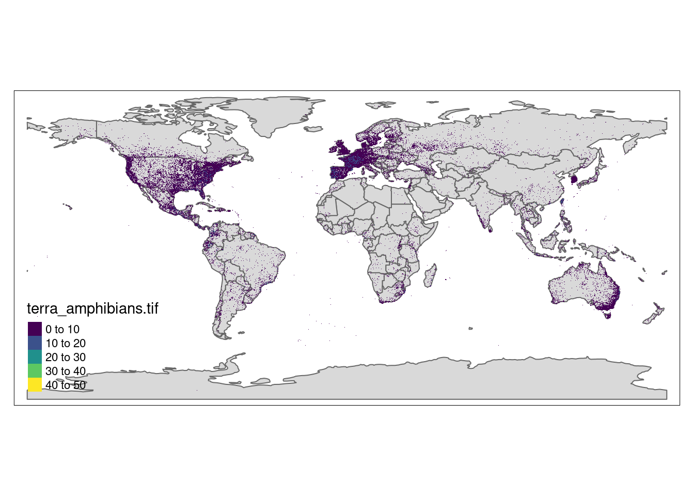
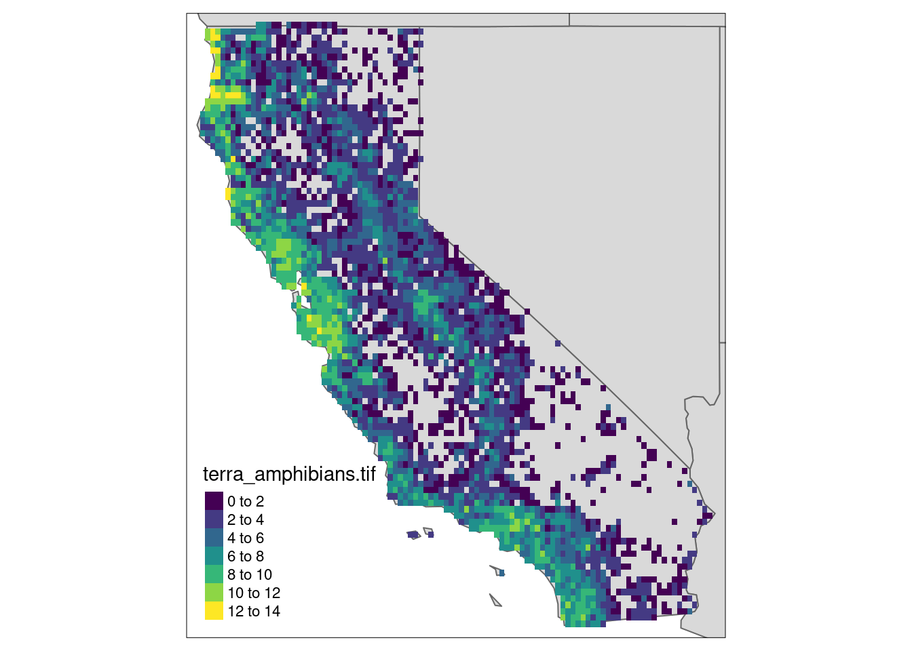

library(duckdb)
library(tidyr)
library(dplyr)
library(stars)
library(tmap)gbif in R
GBIF data is available in parquet partitions from the AWS Open Data Registry. We use the most recent monthly snapshot, corresponding to the S3 bucket, s3://gbif-open-data-us-east-1/occurrence/2023-02-01/occurrence.parquet/. duckdb can execute arbitrary SQL queries against this remote data source without having to first download a local copy of the data, which is around a few hundred GB at present.
We use the httpfs extension in duckdb to access the remote S3 bucket without ever downloading the full dataset. We establish a connection to the parquet data which we can then query using familiar dplyr methods, which are translated to SQL for duckdb under the hood.
con <- dbConnect(duckdb())
dbSendQuery(con, "INSTALL httpfs;")
dbSendQuery(con, "LOAD httpfs;")
dbSendQuery(con, "SET s3_url_style='path';")
bucket <- "gbif-open-data-us-east-1"
path <- "occurrence/2023-02-01/occurrence.parquet/*"
q <- glue::glue('CREATE VIEW gbif AS SELECT * FROM read_parquet("s3://{bucket}/{path}")')
dbSendQuery(con, q)
gbif <- tbl(con, "gbif")Let’s count up species diversity across the GBIF occurrence records. As observations can be reported as longitude/latitude pairs at arbitrary precision, we can round them off to the nearest degree (or tenth of a degree, etc). This provides a convenient mechanism for aggregating occurrences into grid cells. To simplify the counting process, I will aggregate to genus (avoids a few synonyms, sub-species, and incomplete names). For now, let’s also just look at vertebrates, where maybe we have some chance that sampling is closer to saturation of local diversity and we’re not just looking purely at sampling effort. (That’s still a bad assumption I think we’ll see).
bbox <- st_bbox(c(xmin=-180, ymin=-90, xmax=180, ymax=90), crs=4326)
attach(as.list(bbox)) # NSE-filterds <- gbif |>
filter(phylum == "Chordata") |>
filter(decimallatitude >= {ymin},
decimallatitude <= {ymax},
decimallongitude >= {xmin},
decimallongitude <= {xmax}
) |>
mutate(latitude = round(decimallatitude,1L),
longitude = round(decimallongitude,1L)) |>
select(class, genus, longitude, latitude) |>
distinct() |>
count(class, longitude, latitude) |>
replace_na(list(n = 0))
bench::bench_time({ # 4.3m
df <- ds |> collect()
})process real
21.61m 4.57m df |> ungroup() |> group_by(class) |> arrow::write_dataset("gbif_richness")We now have count data for all vertebrate classes in a conveniently sized data.frame. Let’s look at species richness of Amphibians on log-scale. It is natural to visualize this as a raster plot in standard geospatial plotting tools:
amphibia <- df |> na.omit() |>
filter(class=="Amphibia") |>
mutate(logn = log(n)) |>
select(longitude, latitude, n)
r <- amphibia |> stars::st_as_stars(coords=c("longitude", "latitude"))
st_crs(r) <- st_crs(4326)
stars::write_stars(r, "amphibians.tif")library(stars)
library(tmap)
r <- stars::read_stars("terra_amphibians.tif")
data(World)
tm_shape(World) + tm_polygons() +
tm_shape(r) + tm_raster(pal=viridisLite::viridis(100)) + tm_layout(legend.position = c("left","bottom"))stars object downsampled to 1414 by 707 cells. See tm_shape manual (argument raster.downsample)Warning in sf::st_is_longlat(shp2): bounding box has potentially an invalid
value range for longlat data
library(tmap)
box <- spData::us_states |> dplyr::filter(NAME == "California") |>st_transform(st_crs(r))
ca <- r |> st_crop(box)
tm_shape(spData::us_states, bbox = st_bbox(box)) + tm_polygons() +
tm_shape(ca) + tm_raster(pal=viridisLite::viridis(100)) + tm_layout(legend.position = c("left","bottom"))